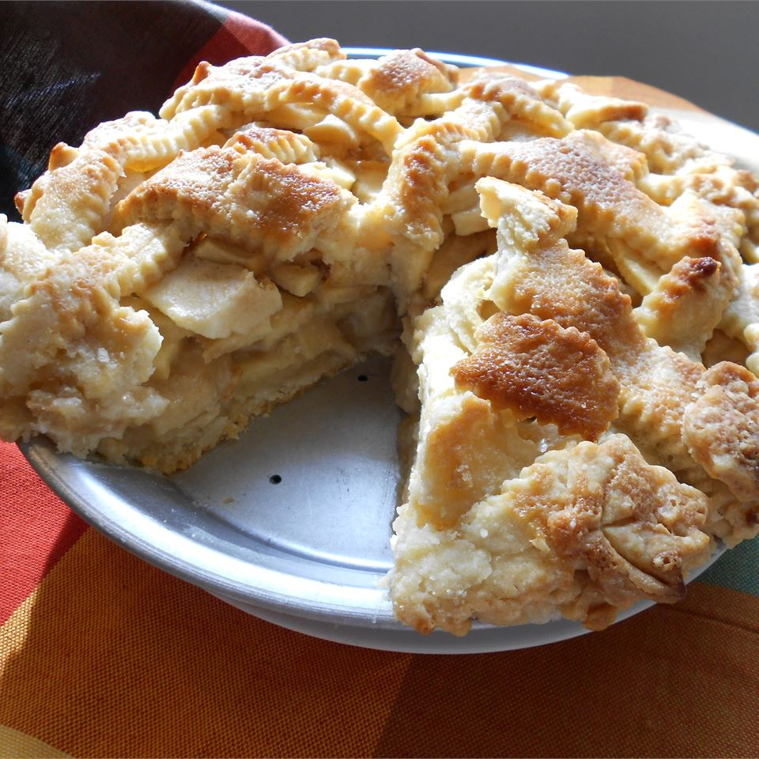

Apple Pie

Description
We don't know if Grandma Ople was Southern, but we have a feeling she was. With tart apples and sweet brown sugar,
it's hard to go wrong with this potluck classic. "This was my grandmother's apple pie recipe," says MOSHASMAMA.
"It will always be my favorite and has won me several first place prizes in local competitions."
Ingredients
- 1 recipe pastry for a 9 inch double crust pie
- ½ cup unsalted butter
- 3 tablespoons all-purpose flour
- ¼ cup water
- ½ cup white sugar
- ½ cup packed brown sugar
- 8 Granny Smith apples - peeled, cored and sliced
STEPS
- Preheat oven to 425 degrees F (220 degrees C). Melt the butter in a saucepan.
Stir in flour to form a paste. Add water, white sugar and brown sugar, and bring to a boil.
Reduce temperature and let simmer.
- Place the bottom crust in your pan. Fill with apples, mounded slightly.
Cover with a lattice work crust. Gently pour the sugar and butter liquid over the crust.
Pour slowly so that it does not run off.
- Bake 15 minutes in the preheated oven. Reduce the temperature to 350 degrees F (175 degrees C).
Continue baking for 35 to 45 minutes, until apples are soft.